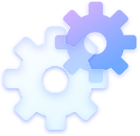

Comunicare eficientă, scalabilă și personalizată care lucrează pentru tine 24/7. Fără stres, fără bătăi de cap.
Rămâi mereu prezent pentru clienții tăi — chiar și când nu ești acolo. Automatizare inteligentă a proceselor, fără bătăi de cap.

Expermintează campanii de outreach care construiesc loialitate, cresc vânzările și mențin legătura cu clienții tăi.
Hai să discutăm despre cum îți putem amplifica afacerea! Oferim servicii complete de marketing digital și îți ajutăm brandul să crească ca să îți atingi scopurile.